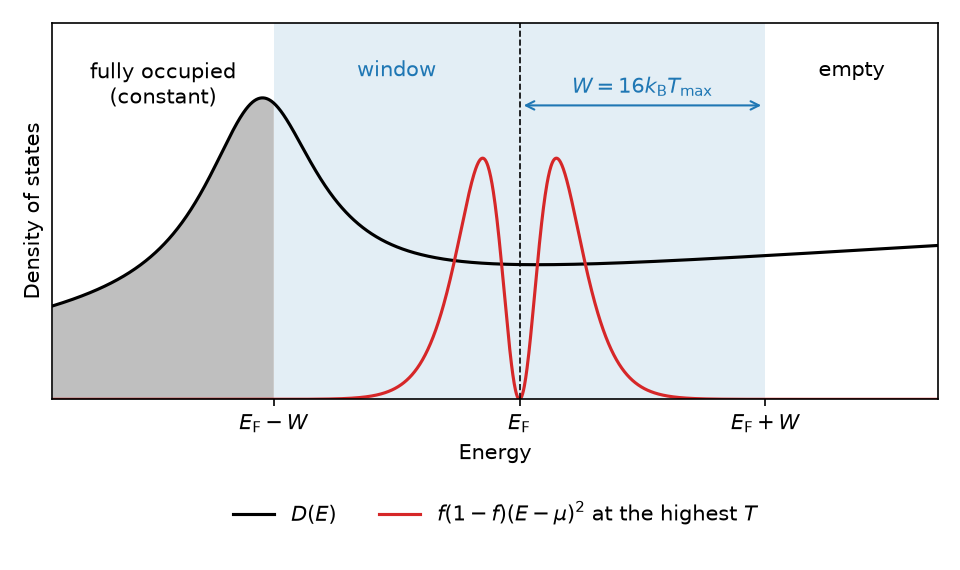

Electronic thermal properties#
In a metal, the electrons near the Fermi level are excited thermally, and they add to the free energy, the entropy and the heat capacity of the crystal. Phonopy computes these electronic contributions from the eigenvalues of an electronic structure calculation. They can be added to the phonon thermal properties in a quasi-harmonic calculation (see Quasi harmonic approximation) or used on their own.
The free energy is that of Mermin’s finite-temperature theory of the electrons, evaluated in the fixed density-of-states approximation. The eigenvalues are computed once, at the static lattice, and are kept the same at every temperature. Only the occupation of the states changes with temperature. The approximation is intended for metals. In an insulator the chemical potential is in the band gap, and the electronic contributions are negligible.
Mermin’s theory is described in the following publications.
N. D. Mermin, Phys. Rev. 137, A1441 (1965).
W. Kohn and L. J. Sham, Phys. Rev. 140, A1133 (1965).
R. G. Parr and W. Yang, Density-Functional Theory of Atoms and Molecules (Oxford University Press, 1989).
Overview#
The boxes are phonopy commands and API functions, the hexagon is the calculator run, and the rounded nodes are input and intermediate data.
flowchart TD
RUN{{"VASP static run<br/>one per crystal structure"}}
RUN --> XML(["vasprun.xml-NN<br/>eigenvalues, k-point mesh, U"])
XML --> EFE["phonopy-vasp-efe"]
EFE --> FEV(["fe-v.dat, e-v.dat<br/>F_el(T) only"])
FEV --> QHA["phonopy-qha --efe"]
TP(["thermal_properties.yaml-NN"]) --> QHA
XML --> ES["phonopy-vasp-efe --es"]
ES --> H5(["electronic_states.hdf5"])
H5 --> RQ["run_qha<br/>(electronic_structures=...)"]
H5 --> API["compute_thermal_properties_by_tetrahedron"]
API --> PROP(["F_el, S_el, C_el, mu, D(E_F)"])
The calculator is run once for each crystal structure, without atomic
displacements. The crystal structures have to be the same as those of the
phonon calculations. vasprun.xml of this run holds the eigenvalues, the k-point
mesh and the static total energy \(U\). For a calculator other than
VASP, build ElectronicStates from its output; see
Input: electronic states.
phonopy-vasp-efe computes \(F_\mathrm{el}(T) - F_\mathrm{el}(0)\) of
every crystal structure and writes it to fe-v.dat. It also writes the
volumes and \(U\) to e-v.dat. phonopy-qha --efe adds these free
energies to the phonon free energies in thermal_properties.yaml.
fe-v.dat has only the free energy. For this reason,
Cp-temperature_polyfit.dat and gruneisen-temperature.dat of
phonopy-qha are computed without the electronic entropy and heat
capacity. See --efe.
phonopy-vasp-efe --es writes the electronic states of every crystal
structure to electronic_states.hdf5 instead. run_qha reads them as
electronic_structures and adds the free energy, the entropy and the heat
capacity of the electrons to those of the phonons. See
Electronic free energies from eigenvalues.
The same file can be used without a quasi-harmonic calculation.
compute_thermal_properties_by_tetrahedron computes
\(F_\mathrm{el}\), \(S_\mathrm{el}\), \(C_\mathrm{el}\) and
\(\mu\) of one crystal structure; see
Python API.
phonopy-anisotropic-qha takes the electronic states from its own dataset,
aniso_qha_dataset.hdf5. See Anisotropic thermal expansion from free-energy minimization for how the
dataset is made.
Equations#
The states are the eigenvalues \(\epsilon_{\mathbf{k}i}\) at the k-points \(\mathbf{k}\), where \(i\) runs over the bands. Each k-point has a weight \(w_\mathbf{k}\), and the weights are normalized so that \(\sum_\mathbf{k} w_\mathbf{k} = 1\). The occupation of a state is the Fermi-Dirac distribution,
where \(\mu\) is the chemical potential and \(T\) is the temperature. The electrons in these states do not interact with each other. Their grand potential is
\(g\) is the number of electrons that one eigenvalue holds; see Spin degeneracy. The number of electrons in the cell is the derivative of the grand potential with respect to the chemical potential,
The chemical potential depends on temperature. At each temperature it is determined so that \(N\) stays the same; see Chemical potential. The entropy of the electrons is the derivative of the grand potential with respect to temperature,
The free energy at a fixed number of electrons is
Because \(\partial \Omega / \partial \mu = -N\), the entropy is also \(S_\mathrm{el} = -(\partial F_\mathrm{el} / \partial T)_N\). The energy of the electrons is \(E_\mathrm{el} = F_\mathrm{el} + T S_\mathrm{el}\), and inserting \(\Omega\), \(N\) and \(S_\mathrm{el}\) gives
The expressions for \(E_\mathrm{el}\) and \(S_\mathrm{el}\) are Eqs. (11) and (12) of C. Wolverton and A. Zunger, Phys. Rev. B 52, 8813 (1995). Phonopy evaluates the sums for \(E_\mathrm{el}\) and \(S_\mathrm{el}\), and obtains the free energy as \(F_\mathrm{el} = E_\mathrm{el} - T S_\mathrm{el}\). This free energy is equal to \(\Omega + \mu N\).
The heat capacity at constant volume is the temperature derivative of the energy,
Differentiating \(E_\mathrm{el}\) gives two terms. One term comes from the change of the occupations at a fixed chemical potential. The other term comes from the change of the chemical potential with temperature, which is fixed by the condition that \(N\) does not change. Together they give
The \(A_1^2/A_0\) term is the contribution of the change of the chemical potential. It is small when the density of states is nearly constant near the Fermi level, and it grows with the slope of the density of states there. Phonopy computes the heat capacity from this expression.
Every sum above has the form \(g \sum_\mathbf{k} w_\mathbf{k} \sum_i h(\epsilon_{\mathbf{k}i})\) with a function \(h\) of energy. Such a sum is an integral over the electronic density of states per cell,
The two ways of computing these sums, which are described in Integration over the Brillouin zone, start from the left-hand side and from the right-hand side of this equation, respectively.
At low temperature, the entropy and the heat capacity are both linear in \(T\),
where \(D(E_\mathrm{F})\) is the density of states at the Fermi level
and \(\gamma\) is the Sommerfeld coefficient. The tetrahedron method
returns \(D(E_\mathrm{F})\) as dos_at_fermi_level, evaluated at the
chemical potential at 0 K; see Python API.
The reference at 0 K#
The free energy is reported as \(F_\mathrm{el}(T) - F_\mathrm{el}(0)\). The total energy of the electronic structure calculation already contains the energy of the electrons at 0 K. Adding \(F_\mathrm{el}(T) - F_\mathrm{el}(0)\) to that total energy adds only the part that depends on temperature. In a quasi-harmonic calculation, the static energy \(U(V)\) is the total energy. The free energy at volume \(V\), before the phonon free energy is added, is
Use the total energy extrapolated to zero smearing as \(U(V)\), such
as energy(sigma->0) of VASP.
Integration over the Brillouin zone#
The sums over k-points above can be computed in two ways.
The linear tetrahedron method builds the electronic density of states from the eigenvalues on the regular k-point mesh, and integrates the expressions above over energy. This is the default when the states carry the k-point mesh, the k-points and the crystal structure.
The k-point sum evaluates the sums as they are written, over the irreducible k-points. It needs only the eigenvalues, the weights and the number of electrons, so it also works for an explicit list of k-points. It converges much more slowly with the number of k-points than the tetrahedron method. Only the states within a few \(k_\mathrm{B} T\) of the Fermi level contribute to the entropy and the heat capacity, and on a coarse mesh few eigenvalues fall in that range. The heat capacity at low temperature is the most affected. Use the tetrahedron method whenever the k-point mesh is available.
phonopy-vasp-efe uses the tetrahedron method for each vasprun.xml that
describes a regular k-point mesh. It uses the k-point sum for a file with an
explicit list of k-points, and for a file whose k-points cannot be mapped
onto the mesh. The --k-point-sum option makes it use the k-point sum for
every file. The command prints the method used for each file, and the
# integration: line in the header of fe-v.dat records it. run_qha uses
the k-point sum for the electronic states that do not carry kpoints,
mesh and cell. phonopy-anisotropic-qha stops with an error for such
states.
The tetrahedron method integrates only over an energy window from \(E_\mathrm{F} - W\) to \(E_\mathrm{F} + W\), where \(E_\mathrm{F}\) is the Fermi energy and \(W\) is the half-width of the window. The states below the window are fully occupied at every temperature and add a constant to the energy, which cancels in \(F_\mathrm{el}(T) - F_\mathrm{el}(0)\). The states above the window are empty. By default, the half-width is
where \(T_\mathrm{max}\) is the highest temperature. The width is set by
the heat capacity. Its integrand contains \(f(1-f)(E-\mu)^2\), which
decreases most slowly away from the Fermi level. The density of states is
sampled on an energy grid of 0.5 meV spacing in the window. The window and
energy_spacing parameters change \(W\) and the spacing.

The energy window of the tetrahedron method, drawn for the case \(W = 16 k_\mathrm{B} T_\mathrm{max}\). The black curve is the density of states. The red curve is \(f(1-f)(E-\mu)^2\) at the highest temperature, drawn without the factor \(D(E)\). It decreases to nearly zero at the edges of the window. The states below the window are fully occupied at every temperature, and the states above the window are empty.#
The symmetrize_tetrahedra parameter averages the tetrahedron weights over
the point group. The --symmetrize-tetrahedra option of phonopy-vasp-efe
does the same. See Migrating toward phonopy v5 for this option and its default in
the next major version.
Chemical potential#
The chemical potential \(\mu\) at temperature \(T\) is the root of the equation
where \(N\) is n_electrons of ElectronicStates. The left-hand side
increases with \(\mu\), so the equation has one root. Phonopy finds the
root by Brent’s method at every temperature.
The k-point sum evaluates the left-hand side as it is written, over the irreducible k-points. The root is searched for between the lowest and the highest eigenvalue.
The tetrahedron method replaces the sum by an integral over the density of states \(D(E)\),
and solves it in two steps.
At 0 K, the chemical potential \(\mu_0\) is the energy at which the integrated density of states is equal to \(N\),
The tetrahedron method gives the integrated density of states as a continuous function of energy, so \(\mu_0\) does not depend on the energy grid.
At a finite temperature, the integral is evaluated on the energy grid in the window. The states below the window hold \(N_\mathrm{below}\) electrons at every temperature. This number is fixed by the condition at 0 K,
The chemical potential at temperature \(T\) is the root of
The window is centered at the Fermi energy reported by the electronic
structure calculation, fermi_energy of ElectronicStates. When it is not
given, the center is the energy up to which the eigenvalues hold
\(N\) electrons. When the chemical potential at 0 K is outside the
window, phonopy stops with an error that asks to widen the window. In that
case, increase window.
Spin degeneracy#
\(g\) in the equations above is the number of electrons that one eigenvalue holds.
In a calculation without spin polarization, the eigenvalues have one spin channel and each eigenvalue holds two electrons, \(g = 2\).
In a collinear spin-polarized calculation, the eigenvalues have two spin channels and each eigenvalue holds one electron, \(g = 1\).
In a non-collinear calculation, the eigenvalues have one spin channel, but each spinor state holds one electron, \(g = 1\).
Phonopy infers \(g\) from the number of spin channels. This inference is
wrong for a non-collinear calculation. For such a calculation, set
spin_degeneracy=1 in ElectronicStates.
Input: electronic states#
The input is ElectronicStates of phonopy.electron.states, one per
crystal structure:
Field |
Content |
|---|---|
|
Eigenvalues in eV, with shape (spin, k-points, bands). |
|
Weights of the k-points, with shape (k-points,). They need not be normalized. |
|
Number of electrons in the cell. |
|
Fermi energy in eV reported by the calculation. Optional. |
|
\(g\). Optional; inferred from the number of spin channels when not given. |
|
The irreducible k-points in fractional coordinates, the k-point mesh, and the crystal structure. Optional; all three are needed for the tetrahedron method. |
|
The cell volume and the static total energy. Optional; used by the quasi-harmonic calculation. |
The results are per cell for which the eigenvalues were computed. The phonon
thermal properties of phonopy are per primitive cell. When the eigenvalues
are computed for a larger cell, such as the conventional cell of a centred
lattice, the results are scaled by the volume of the primitive cell divided
by the volume of that cell before they are added to the phonon thermal
properties. run_qha does not scale them. It checks that the volumes of the
electronic states are equal to the volumes of the primitive cells of the
phonons, so compute the eigenvalues for the primitive cell.
phonopy-anisotropic-qha takes the electronic states of the conventional
cell and scales them.
For VASP, phonopy-vasp-efe reads vasprun.xml files and writes the
electronic states of all of them to electronic_states.hdf5:
% phonopy-vasp-efe --es vasprun.xml-{00..10}
The k-points, the mesh and the crystal structure are stored when the
vasprun.xml describes a regular k-point mesh. Read the file with
read_electronic_states_hdf5, which returns a list of ElectronicStates.
Python API#
compute_thermal_properties_by_tetrahedron of phonopy.electron.tetrahedron
computes the thermal properties by the tetrahedron method:
import numpy as np
from phonopy.electron.states import read_electronic_states_hdf5
from phonopy.electron.tetrahedron import compute_thermal_properties_by_tetrahedron
states = read_electronic_states_hdf5("electronic_states.hdf5")
temperatures = np.arange(0, 1001, 10.0)
properties = compute_thermal_properties_by_tetrahedron(states[0], temperatures)
properties.free_energy # F_el(T) - F_el(0) in eV
properties.entropy # S_el in eV/K
properties.heat_capacity # C_el in eV/K
properties.chemical_potential # mu in eV
properties.dos_at_fermi_level # D(E_F) in states/eV
dos_at_fermi_level is one value, the density of states at the chemical
potential at 0 K. Each of the other fields is an array with one value per
temperature. The temperatures do not have to include 0 K; the value at 0 K
is computed anyway as the reference of the free energy.
The values are per cell for which the eigenvalues were computed. The phonon
thermal properties of phonopy are in kJ/mol and J/K/mol per primitive cell.
To compare with them, first scale the values to the primitive cell as
described in Input: electronic states. Then multiply the
free energy by get_physical_units().EvTokJmol, and the entropy and the
heat capacity by get_physical_units().EvTokJmol * 1000.
get_physical_units is in phonopy.physical_units.
compute_thermal_properties_by_kpoint_sum of phonopy.electron.kpoint_sum
takes the same arguments and computes the thermal properties by the k-point
sum. Both functions return ElectronicThermalProperties. The k-point sum
gives no density of states, and its dos_at_fermi_level is None.